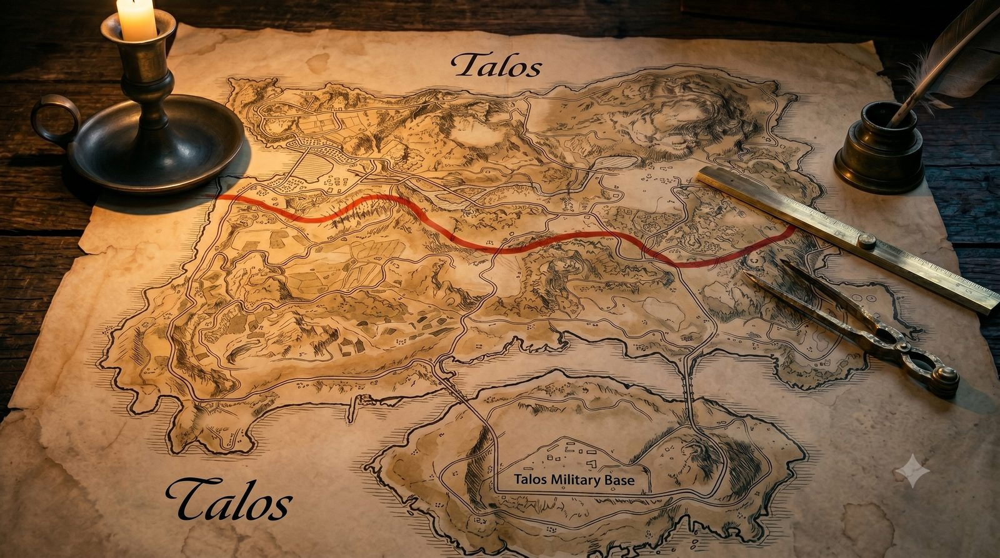
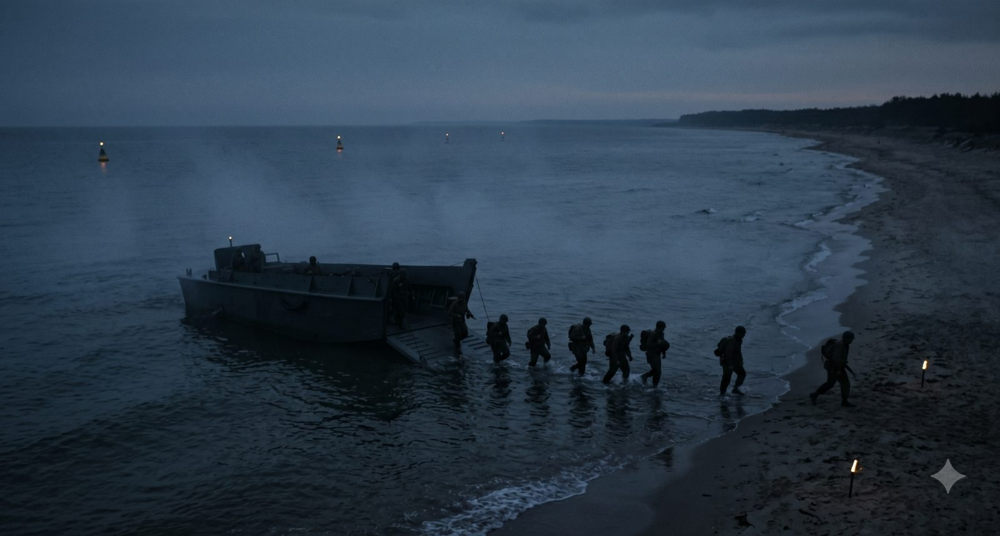
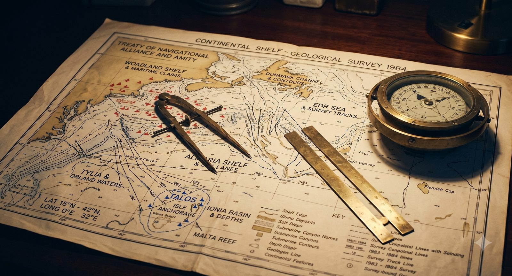

TALOS TRUTH ✓
ศูนย์ตรวจสอบข้อมูลเพื่อประชาชนเกาะ TALOS
← Campaign Hub

เว็บไซต์อิสระเพื่อตรวจสอบข้อมูลบิดเบือนเกี่ยวกับเกาะ TALOS — เราเทียบทุกข้อกล่าวอ้างกับเอกสาร หลักฐาน และกฎหมายระหว่างประเทศที่ทุกคนตรวจสอบได้ด้วยตัวเอง
แยกข่าวลวงออกจากความจริง — แต่ละการ์ดเทียบสิ่งที่ WL อ้าง กับสิ่งที่หลักฐานบอก

"TALOS เป็นมรดกของ WL มาแต่โบราณ"
ประชากรบนเกาะกว่า 95% เป็นชาว Azizalian และเมื่อ ~100 ปีก่อน ทั้งเกาะเป็นดินแดนของ ALIZARIA มาก่อน

"เส้นแบ่งเขตเป็นไปตามกฎหมายและชอบธรรม"
เส้นแบ่งถูกขีดโดยมหาอำนาจ ARGENTIA ในยุคอาณานิคม เพื่อผลประโยชน์ของตน โดยไม่เคยถามชาวเกาะ

"WL ได้เกาะมาอย่างสันติ"
WL ใช้กำลังทหารเข้ายึด และดำเนินนโยบายรัฐ นำผู้ตั้งถิ่นฐานเข้ามาทับประชากรเดิมอย่างเป็นระบบ

"ฝั่งใต้ของเกาะเป็นของ WL"
ในสงคราม WL–EDR ตัว WL ลงนามข้อตกลงทวิภาคียกฝั่งใต้ให้ AZ โดยใช้แนวสันปันน้ำเป็นเส้นเขตแดนระหว่างประเทศ — WL เซ็นเอง

"AZ เพิ่งอ้างสิทธิ์เพราะแร่หายาก"
AZ ประกาศเขตไหล่ทวีปครอบคลุม TALOS ตั้งแต่ ค.ศ. 1982 — ก่อนการค้นพบแหล่ง VERDATA (REE 23 ล้านตัน มูลค่า ~$4.7 ล้านล้าน) หลายสิบปี

"ประชาคมโลกหนุนหลัง WL"
UNSC ข้อมติ 2847 เรียกร้องให้ WL ถอนตัว ภายใต้หมวด 7 แห่งกฎบัตรสหประชาชาติ ซึ่งเป็นมติที่มีผลผูกพัน

"การรุกล้ำ H-45 เป็นการป้องกันตนเอง"
WL ยกพลข้ามเส้นสันปันน้ำที่ตนลงนามรับรองเอง ยึดท่าเรือ TALOS และสนามบิน VERDATA ภายใน 72 ชั่วโมง — ตามนิยามคือ การรุกราน ไม่ใช่การป้องกันตนเอง
นี่คือข้อมูลบิดเบือนที่เรากำลังโต้แย้ง — ยอดเข้าถึงสูง ไม่เท่ากับความจริง
เราไม่ขอให้คุณ "เชื่อ" — เราขอให้คุณ "ตรวจสอบ" จากแหล่งเอกสารต้นทางเหล่านี้